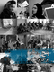

پذيرش > تریبون > گزارش كمپين > هفته اول شهریور با زنان در خبر


 هفته اول شهریور با زنان در خبر هفته اول شهریور با زنان در خبر
9 شهریور 1390 - بهناز مهرانی - نسخه قابل چاپ
تغییر برای برابری: هفته اول شهریور مقارن است با سالگرد کمپین یک میلیون امضا که امسال پنج ساله شد. عدم اجرای بیمه زنان خانه دار, برگزاری مراسم لیلا اسفندیاری و ممانعت از پخش یک فیلم درباره او در این مراسم, تشکیل ستادی برای پیشگیری از طلاق, ساختن سپر انسانی توسط زنان در کردستان عراق و کارزار عدم خشونت علیه زنان در کلمبیا از دیگر اخبار حوزه زنان در این هفته بود.
زنان و مجلس
عدم اجرای بیمه زنان خانه دارپس از 9 سال
براساس مصوبه ای که در سال 1381 راجع به بیمه اجتماعی زنان به تصویب رسید، قرار بود یک اعتبار 200 میلیون تومانی به این امر اختصاص داده شود. شرایط برخورداری از بیمه زنان خانه دار به این شکل تعریف شده بود که چنانچه زنان 22 تا 60 ساله ظرف 20 سال ماهانه 5 هزار تومان بابت بیمه خود پرداخت کرده باشند، در صورت ازکار افتادگی و بازنشستگی می توانند از تامین اجتماعی برخوردار شوند.
دولت وقت ( محمد خاتمی) نیز وعده داده بود که با اختصاص اعتبار به این مصوبه، آن را در اولویت قرار دهد. اما عملا اولویتی داده نشد و پس از گذشت 9 سال این مصوبه همچنان روی کاغذ باقی مانده است.
تشکیل ستاد «پیشگیری از طلاق»
مریم مجتهدزاده رییس مرکز امور زنان و خانواده ریاست جمهوری با اعلام تشکیل ستادی برای پیشگیری ازطلاق گفت: «نهادهای مختلف به وظیفه خود در زمینه آموزش نقشهای اجتماعی و پیشگیری از طلاق عمل نکردهاند». وی اظهارکرد: در ستاد پیشگیری از طلاق وظایفی برای دستگاههای مختلف همچون آموزش و پرورش، دانشگاهها، ثبت احوال، قوه قضاییه ، صدا و سیما و غیره در قالب یک تقسیم کار ملی برای تحکیم بنیان خانواده و جلوگیری از طلاق تعریف شده است.
به نظر می رسد رشد سریع آسیب های اجتماعی از جمله اعتیاد، خودکشی، طلاق و...موجب نگرانی مسئولان شده است اما با توجه به عملکرد زنان مسئول در دولت فعلی پرواضح است که انتظار پیشنهاد و اجرای راهکارهای علمی و اصولی که منجر به کاهش رشد آسیب های اجتماعی موجود بشود، امری بیهوده است.
زنان و ورزش
سهم ورزش زنان ایران در المپیک ۲۰۱۲
با توجه به رشته های ورزشی که در فهرست المپیک قرار دارند، سهم زنان ورزشکار ایرانی در المپیک 2012 لندن، تاکنون 2 نفر بوده است. در بسیاری از رشتهها زنان ایرانی فعالیتی ندارند و در برخی رشتههای دیگر تصمیم گرفته شده که زنان حتی در رقابتهای گزینشی هم شرکت نکنند. دو رشته کشتی و وزنه برداری برای زنان ایرانی غیرقانونی هستند و در بسیاری از رشته ها به دلیل مشکل پوشش، دختران ایران نمیتوانند در مسابقات برونمرزی شرکت کنند.
به گزارش دویچه وله ورزش زنان ایران در کاراته، شطرنج، ووشو و کبدی موفق است. اما هیچ کدام از این رشتهها در میان رشتههای المپیکی به چشم نمیخورند. تا امروز نیز زنان ایرانی فقط در تیراندازی موفق به کسب ۲ سهمیه شدهاند.
لیگهای نابسامان ورزش زنان در رشتههای مختلف ورزشی، کمبود امکانات و سرمایهگذاریها در بخش زنان، تبعیض مسئولان ورزش در پاداشها و بیتوجهی صداوسیما و سایر رسانهها به ورزش زنان، از جمله نکات منفی در ساختار ورزش زنان ایران است. رویهای که اگر همچنان بر همین منوال ادامه یابد، شاید همین مختصر اندوخته ورزش زنان ایران نیز به سرعت از دست برود.
ممانعت از پخش فیلم لیلای بی لیلی در مراسم بزرگداشت لیلا اسفندیاری
مراسم بزرگداشت لیلا اسفندیاری روز سوم شهریور ساعت پنج عصر توسط باشگاه کوهنوردی و اسکی دماوند در سالن نگین غرب برگزار شد. در این مراسم که تعداد زیادی از کوهنوردان، ورزشکاران و دوستداران لیلا اسفندیاری درآن حضور داشتند، قرار بود فیلم لیلای بی لیلی ساخته جواد نظام دوست پخش شود که به گفته مجری برنامه به علت داشتن صحنه هایی که پیش از این بازبینی نشده بوداز نشان دادن فیلم ممانعت به عمل آمد. در این فیلم لیلا اسفندیاری روسری به سر نداشت.
زنان و آسیب های اجتماعی
افزایش ده درصدی طلاق در استان کرمان
به گزارش خبرگزاری مهر معاون برنامه ریزی دادگستری کرمان از افزایش 10 درصدی آمار درخواست طلاق در کرمان طی سال جاری خبر داد.
محمد صادق شجاعی گفت: طی سال جاری دو هزار و 183 درخواست طلاق محلی داشته ایم و بررسی ها از افزایش 10درصدی آمار نسبت به مدت مشابه سال قبل حکایت دارد.
خودسوزی یک زن 75 ساله در کرمانشاه
بر طبق اخباری که به وبلاگ بهار روانسر رسیده است اوایل این هفته یک پیر زن 75 ساله اهل دهستان بدر آباد از توابع شهرستان روانسر در استان کرمانشاه،به نام آسیه مرادی که صاحب 5 فرزند نیز می باشد به علت اختلافات خانوادگی اقدام به خود سوزی کرده و روز چهارشنبه به علت شدت سوختگی(80%)جان خود را از دست داد.
اقدام به خودکشی به روش خودسوزی روشی خشن و بیرحمانه جهت پایان دادن به زندگی می باشد که فرد آگاهانه با به آتش کشیدن جسم خود سعی در قطع حیات خویش دارد. فقر، پافشاری بر ازدواج ناخواسته، تهمت، فحشا، در تنگنا قرار دادن فرد توسط خانواده، برآورده نشدن نیازها و بسیاری عوامل دیگر می تواند موجب شود که فرد این روش را به عنوان راه حل برگزیند.
زنان و حجاب
در هفته ای که گذشت نیز همچون سایر هفته های تابستان شاهد آزار زنان با عنوان مبارزه با بدحجابی بودیم. به نظر می رسد قرار است شدت برخوردها با زنانی که بدحجاب خوانده می شوند، پس از این بیشتر شود.
آیت الله مهدوی کنی در برنامه ای که از شبکه اول سیما پخش شد، درباره مبارزه با بدحجابی گفت: «اینطور نمی شود که هر کسی هر طور خواست در خیابان راه برود. وقتی از او می پرسند چرا این طور مبتذل تو خیابان راه می روی؟ می گوید دلم می خواهد. وی گفت: نباید به بهانه تربیت و فرهنگسازی، کنترل را رها کرد. اگر بنا باشد در جامعه هوای نفس حاکم باشد، هرج و مرج حاکم می شود. این می گوید دلم می خواهد، آن می گوید دلم می خواهد، نتیجه این می شود که داد مردم بلند می شود.»
همچنین دادستان عمومی و انقلاب اصفهان در جمع خبرنگاران گفت: از اين پس زنان بدحجاب در معابر و انظار عمومی اين شهر به 10 روز تا 2 ماه حبس و 50 تا 500 هزار ريال جريمه نقدی محكوم مي شوند.
محمدرضا حبيبي گفت: : از سازمان هاي اتوبوسراني و تاكسيراني و اصناف خواسته شده است كه از ارائه خدمات به افراد بدحجاب خودداري كنند و ادارات نيز بايد به كاركنان بدحجاب خود اخطار داده و از سرويس دهي به افراد بدحجاب خودداري كنند.
آمورش 2 هزار و 200 استاد زن براي مقابله با مكاتب انحرافی در دانشگاهها
پروین هدایتی، معاون سرمايههاي اجتماعي مركز امور زنان و خانواده رياست جمهوري، تقويت و ترويج فرهنگ صحيح مهدوی، پاسخ به شبهات و افكار مسموم داخل و خارج ، فرقههای انحرافی و پيرايش معارف مهدويت از خرافات و تحريف، را از اهداف اجرای این طرح دانست.
زنان و زندان
بنا برگزارشهای رسیده از زندان اوین، فرح واضحان، زندانی سیاسی، در شرایط نامناسب جسمانی به سر میبرد. وی که پیش از این نیز بارها از زندان به بیمارستان منتقل شده بود، روز یکشنبه گذشته بار دیگر به سبب وخامت حالش به بیمارستان انتقال یافت، با این حال گفته میشود مسئولان بیمارستان به دلیل کمبود تخت از پذیرش وی خودداری کردهاند و وی مجددا به زندان اوین بازگردانده شده است.
فرح واضحان که از بیماریهای مختلفی رنج میبرد، در جریان وقایع عاشورای سال ۸۸ بازداشت شد و از سوی دادگاه انقلاب به اعدام محکوم شد. این حکم پس از اعتراض وی در دیوان عالی کشور، نقض شد و پرونده او جهت رسیدگی مجدد به شعبه ۲۸ دادگاه انقلاب به ریاست قاضی مقیشه ارجاع داده شد. وی سپس در دادگاه به اتهام «محاربه» مورد محاکمه قرار گرفت و به ۱۵ سال حبس تعزیری محکوم شد.
این زندانی سیاسی که از بیماری قلبی نیز رنج میبرد، نیاز به درمانهای جدی و تخصصی در خارج از زندان دارد. با این حال و به رغم وعدههای داده شده به خانواده وی، تاکنون از مرخصی او جلوگیری شده است.
بی خبری از وضعیت ثمین احسانی
از وضعیت و اتهامات ثمین احسانی، فعال حقوق کودکان و شهروند بهایی که در تاریخ 26 مرداد بازداشت شده بود، همچنان خبری در دست نیست. احسانی پس از مراجعه به دادسرای اوین و جهت حل مشکل پاسپورت خود،بازداشت شد. پس از آن مامورین به منزل وی آمده و ضمن تفتیش آن، تمام وسائل شخصی از جمله کامپیوتر و همینطور وسائل مربوط به دیانت بهایی را ضبط کردند. وی تاکنون تماسی با خانواده خود نداشته است.
کمپین یک میلیون امضا 5 ساله شد
کمپین یک میلیون امضا روز پنج شهریور هشتاد و پنج با اقدام به جمع آوری یک میلیون امضا تلاش عملی خود را جهت تغییر قوانین تبعیض آمیز آغاز کرد.
با زنان در جهان این روزها
زنان کرد در مناطق مرزی ترکیه و عراق سپر انسانی ایجاد کرده اند
تلویریون نوروز با انعکاس این خبر به نقل از تظاهرکنندگان گزارش داده است که مادران کرد خواهان حمایت از سوی رسانه ها و نهادهای مدنی و نمایندگان پارلمان ها شده اند.
طی هفته های گذشته دولت ترکیه به حملات خود به مناطق کردنشین ادامه داده و علاوه بر پایگاه های نظامی نیروهای حزب پ.ک.ک ترکیه، روستاها و ساکنین غیرنظامی را نیز هدف گرفته است که منجر به کشته شدن تعداد زیادی از انسانهای بی دفاع شده است.
کارزار زنان کلمبیا علیه خشونت با استفاده از نمادها و زبان ورزشی
چند سازمان حقوق بشر در کلمبیا، برای جلب افکار عمومی علیه خشونت نسبت به زنان، با استفاده از زبان ورزشی و شعار "خشونت علیه زن از تو قهرمان نمی سازد"، کارزار جدیدی را آغاز کردند.
رئیس این کارزارمی گوید که علت استفاده از زبان و نمادهای ورزش فوتبال، محبوبیت این ورزش و انتخاب روش جایگزینی برای جلب بیشتر افکار عمومی به این مشکل حاد اجتماعی است. وی افزود که خشونت علیه زنان، افزون بر پیامدهای جسمی آن، نقض منزلت و آزادی زن است.
تظاهرات زنان نیمه عریان آمریکایی برای برابر حقوقی با مردان
در حالی که مردان آمریکایی حق دارند با بالاتنه عریان در اماکن عمومی ظاهر شوند، این امر برای زنان در بسیاری از مناطق ایالات متحده امریکا مجاز نیست. سازمان "گوُ تاپلس" (با بالاتنه عریان برو) در این رابطه اعلام کرد که این با برابر حقوقی در تضاد است وطرفدارانش را به تظاهرات علیه این تبعیض فراخوند.
در پیوند با این فراخوان، زنان با بالا تنه عریان و مردان با سینه بند در چندین شهر ایالات متحده دست به تظاهرات زدند و فیلم تظاهرات را نیز در یوتیوب به نمایش گذاشتند. سازمان "گوُ تاپلس" اعلام کرد که برابر حقوقی زن و مرد در قانون اساسی تضمین شده و اگر مردان چنین حقی را دارند، زنان نیز باید بتوانند در اماکن عمومی با بالاتنه عریان ظاهر شوند و اگر این را نمی پسندند، پس مردان هم بالاتنه خود را بپوشانند.
ارسال به
بالاترین
،
توییتر
،
فریندفید
،
فیسبوک
در همين بخش :
 دهمین دورۀ مراسم تندیس صدیقه دولت آبادی ۱۳۹۲ دهمین دورۀ مراسم تندیس صدیقه دولت آبادی ۱۳۹۲
کارت پستالهایی به بهانهی هشت مارس و به یاد همهی مبارزین راه برابری
بیانیه بیش از 350 تن از مدافعان حقوق زنان به مناسبت روز جهانی زن؛ زنان هر روز فرودستتر میشوند
لباسی که برای تن ما دوخته اند! /اعظم بهرامی
چالشها و چشمانداز فعالیت مدنی زنان
ديگر بخش ها :
طرح یک میلیون امضا
|
مقالات
|
سایت نوشته ها
|
اخبار
|
گزارش كمپين
|
گفت و گو
|
علیه سکوت
|
كوچه به كوچه
|
نامه های شما
|
گزارش ویژه
|
گفتگو با اعضا
|
ویژه سالگرد کمپین
|
تصویر برابری
|
دل آرام علی
|
تریبون
|
مقالات
|
تاریخ شفاهی
|
خارج از چارچوب
|
کتابخانه
|
درباره کمپین
|
کمپین در شهرها
|
کمپین در بند
|
صدای تغییر
|
ویژه 22 خرداد
|
لایحه حمایت از خانواده
|
گالری
|
عشا مومنی
|
امیر یعقوبعلی
|
خدیجه مقدم
|
راحله عسگری زاده و نسیم خسروی
|
پروین اردلان،جلوه جواهری، مریم حسین خواه، ناهید کشاورز
|
زینب پیغمبرزاده
|
سعیده امین، سارا ایمانیان، محبوبه حسین زاده، ناهید کشاورز و همایون نامی
|
احترام شادفر
|
نسیم سرابندی زاده،فاطمه دهدشتی
|
وبلاگ مهمان
|
پرونده خرم آباد
|
دستگیری ها
|
مریم مالک
|
پرستو اللهیاری
|
مهرنوش اعتمادی
|
سمیه رشیدی
|
Other Languages
|
همراهان
|
«فراخوان کمپین ده روز با بهاره هدایت»
| English
|